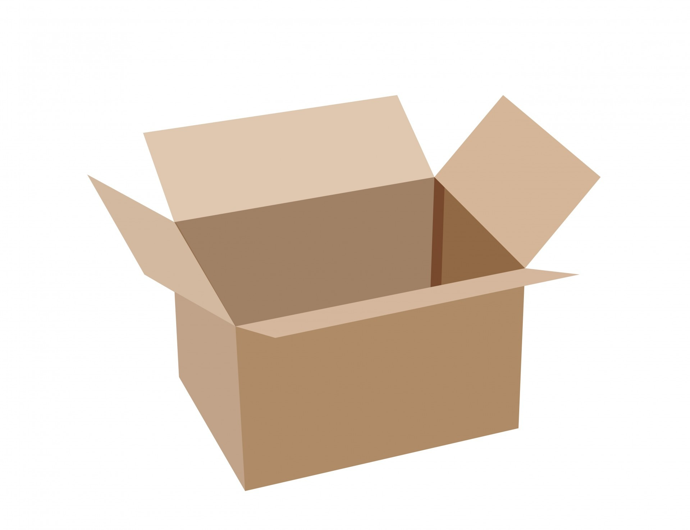
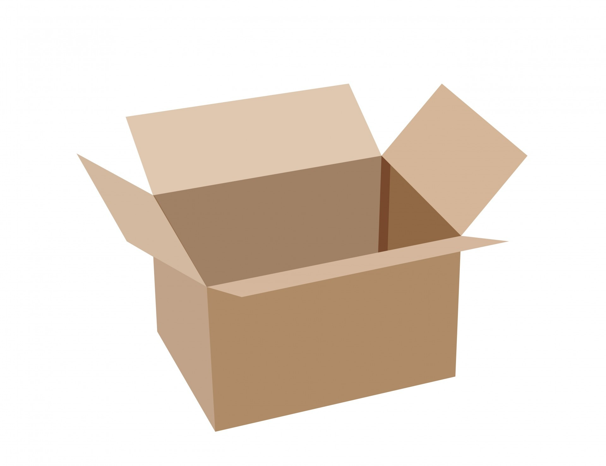
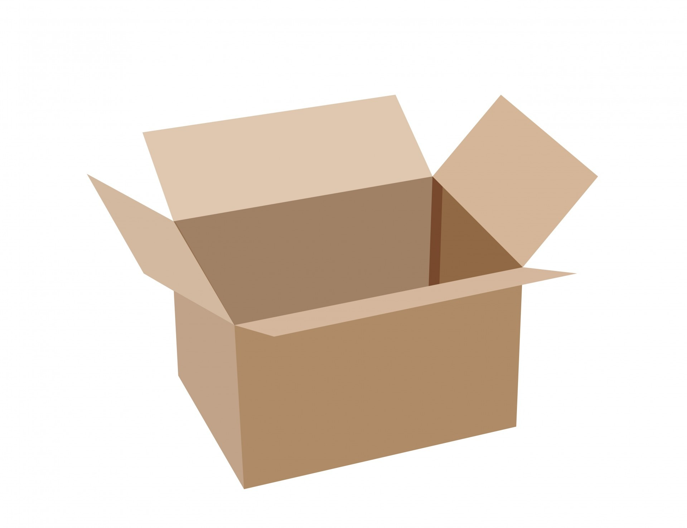
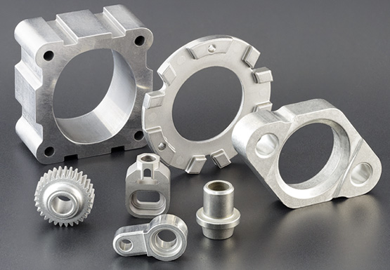
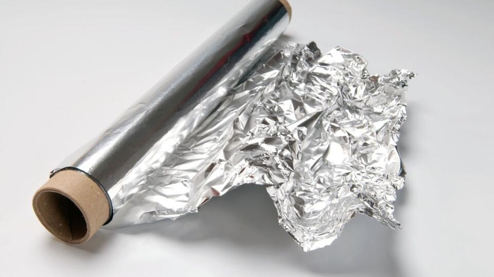
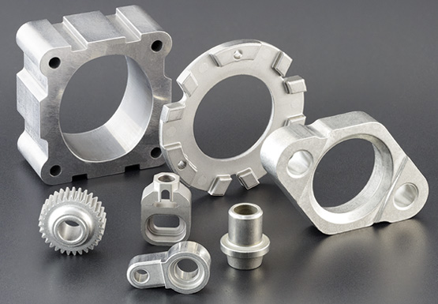
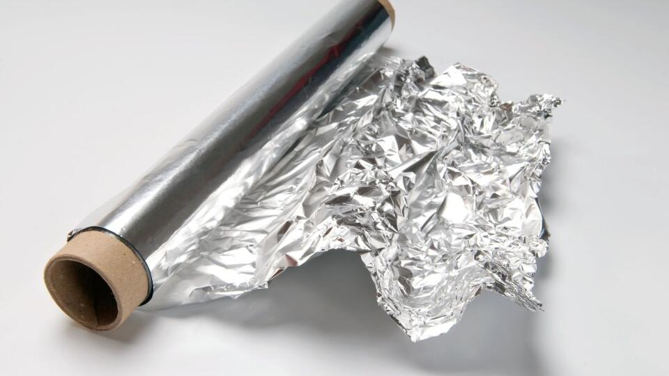

Do modrého kontajnera patrí:
- noviny
- časopisy
- kancelársky papier
- reklamné letáky
- stlačené krabice
- kartóny
- čisté papierové obaly
- papierové tašky
V malom množstve aj papier s kancelárskymi sponkami alebo skartovaný papier.
 

V malom množstve aj papier s kancelárskymi sponkami alebo skartovaný papier.

Každá obec má iný spôsob triedenia nápojových kartónov, avšak nikdy ich neodhadzujeme do modrého kontajnera!
Väčšie množstvo sklených črepov alebo črepy väčších rozmerov patria na zberný dvor. Fľaše, poháre aj črepy pred vyhodením do kontajnera dôkladne očistíme.
Vratné fľaše vraciame späť do obchodu!
PET fľaše vyhladzujeme aj s uzávermi a pred vyhodením ich stlačíme. Všetky obaly pred poriadne očistíme od zvyškov jedál, mastnoty aj chemikálii.


Obaly s nepoužitými liekmi odovzdávame naspäť do lekárne. Nikdy ich nevyhadzujeme do odpadu!
Kovy sa triedia rôzne, podľa pokynov danej obce.
 



Nadrozmerný kovový odpad patrí do zberní kovov alebo do zberných dvorov.
Biologicky rozložiteľný odpad sa triedi podľa pokynov obce, v niektorých prípadoch môžu ísť do hnedého kontajnera aj papierové vreckovky, či kuchynské utierky.


Ak nie je uvedené inak, do hnedého kontajnera nepatria ani sáčky, do ktorých zbierame biologicky rozložiteľný odpad. Potrebné informácie nájdete na internetovej stránke vašej obce alebo na príslušnom kontajneri.